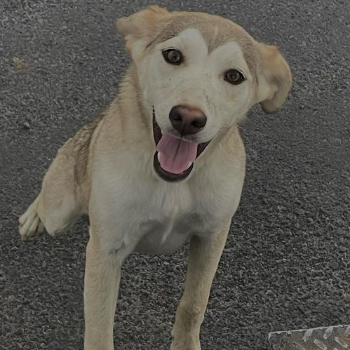

Leonel
Perro disponible en adopción
Características
- Raza: Mezcla/Criollo
- Sexo: Macho
- Edad: Adolescente
- Tamaño: Mediano
Descripcion
Leonel es juguetón, algo necio y no respeta la autoridad. Le gusta jugar a la pelota y disfruta de largos paseos.
Leonel tambien es sociable con adultos y otros animales. Se recomienda supervisar sus interacciones con niños pequeños.
Salud
Leonel está al día con sus vacunas y ha sido esterilizado. No presenta problemas de salud conocidos.
Ubicación
Ciudad de México